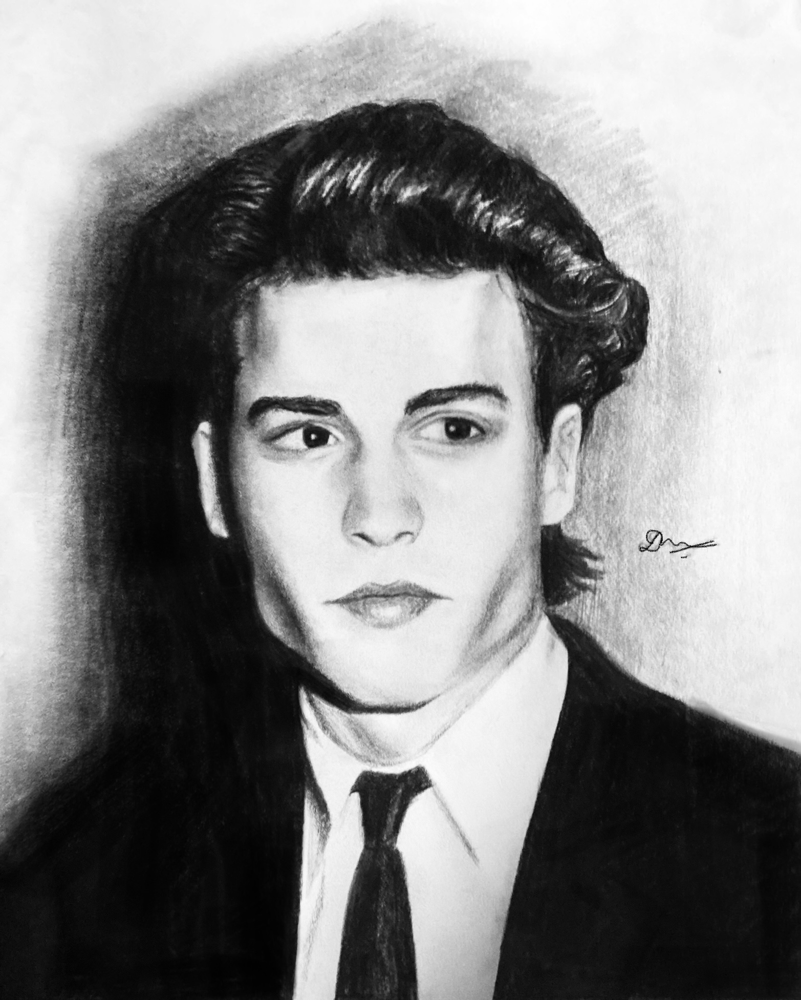

2
22022-09-06
The complexity of a face is incredibly difficult to encapsulate within a drawing. Expressions are fluid and often very subtle; the factors that affect how we interpret them rely heavily on intuition. Sparking the same intuition in the viewer with a drawing is difficult and, when successful, frequently ends up being accidental.
I’ve tried my hand at portraiture in both realism and impressionalism. Some of my attempts are below - see if they spark your intuition.
3


{-} 2022-08-21
This artwork has easily been the hardest I’ve ever made. It totalled
about twelve hours of nearly continuous work, spread over less than a
day. Having been my first attempt at drawing somebody over the age of
forty, it took a lot longer than I expected. The materials I used were
charcoal pencils (soft and medium-soft), a 10B graphite pencil, blending
stumps, kneaded eraser, a white colour pencil, charcoal willow sticks,
and a compressed charcoal block. I started out by adding a
nine-by-eleven square grid over the reference image, and then drawing
the same grid onto paper. Using the squares to ensure that the
proportions of the face were correct, I then began with the detailing,
starting, as always, with the eyes. My reason for choosing this
reference, from many others of similarly aged people, was the way it
distinctly bore reminiscence. The slight touch of sadness in the eyes,
countered by the furrowed brows, made for a challenge I had to
attempt.↩︎
{-} 2022-06-12
A comparitively simpler sketch, this didn’t take very long to finish.
The materials I used were a soft charcoal pencil, an 8B graphite pencil
and an eraser. I began with the general outline of the face and
shoulders, and made basic rough shapes for the features. Starting from
the eyes, I detailed first the face, then the hair, and finally, the
suit. It fascinated me that despite Johnny Depp towards the beginning of
his career differing so greatly from the way he is today, over all these
years, his eyes remain unchanged. It took me several attempts to get
them right, simply because until they were made correctly, the sketch
just didn’t look like him.↩︎
{-} 2022-04-13
One of my first attempts at a sketch that included more than the face,
this drawing was an interesting journey in anatomy. Considering the
slightly strange angles of the face, neck, and arms, it took me multiple
tries to get the right outer shape. The materials I used were a
compressed charcoal block, soft charcoal pencil, 8B graphite pencil,
white coloured pencil and eraser. I began with detailing the abdominal
muscles, sketching the creases in the jeans and then building up to the
face. Detailing the guitar last, I took great care to correctly
replicate the shadows and reflections in the strings. This drawing
proved to be one of the most challenging I have ever attempted. The
expression was extremely difficult to get right. The relaxed and yet
sharp jaw, alongside the eyebrow proved to be the most defining features
of the face - and the easiest to mess up. The subtlety of this artwork,
however, lies in the smile. Relaxed, very slight, and yet, without it
the whole drawing loses its charm.↩︎